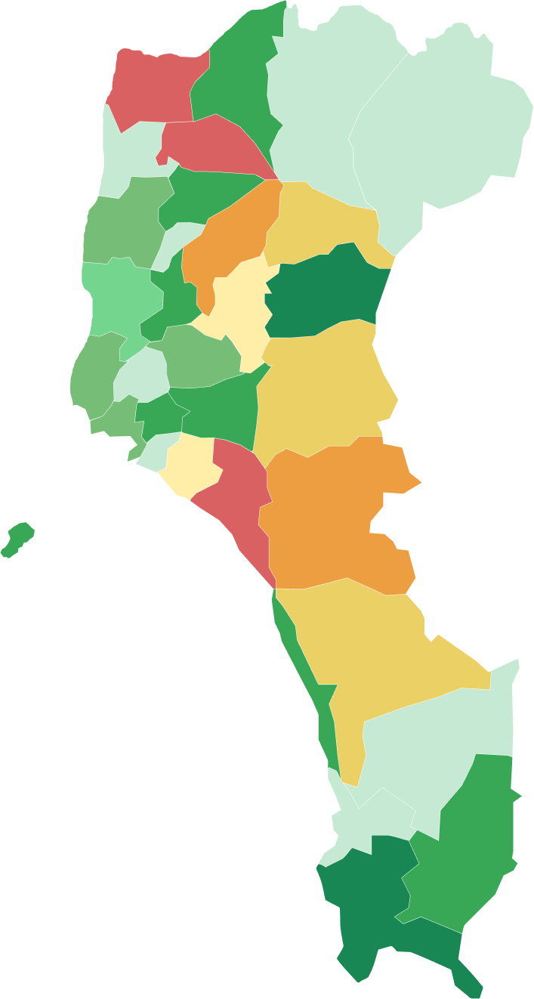

最新公告
114/06/15
蛇隨時出沒！提升防範宣導
114/05/20
蜂巢移除作業說明
114/04/30
春季動物救援志工招募
114/04/10
意外通報系統維護公告
114/03/25
蛇蛇不寒假：寒冬巡檢啟動
114/03/01
蜂窩結構研究成果發表
案件列表
立案編號
20250131115010001
通報
09:15:30
地址
屏東縣屏東市民族路123號
通報人
陳小姐 0912-345678
待處理
捕蜂
外勤人員：尚未指派
立案編號
20250131115010002
通報
08:30:15
地址
屏東縣屏東市中山路456號
通報人
林先生 0987-654321
已指派
捉蛇
外勤人員：王大明
立案編號
20250131115010003
通報
14:20:45
地址
屏東縣屏東市公園路789號
通報人
張女士 0923-456789
審核退回
動物救援
外勤人員：李小華
立案編號
20250131115010004
通報
10:45:20
地址
屏東縣屏東市建國路321號
通報人
黃先生 0934-567890
審核中
綠鬣蜥
外勤人員：劉大偉
立案編號
20250131115010005
通報
07:15:10
地址
屏東縣屏東市勝利路654號
通報人
吳小姐 0945-678901
審核完成
捕蜂
外勤人員：趙志明
地圖資訊

500 件以下
500 件以上
500-1000 件
1000-2000 件
2000 件以上
指標
捕蜂案件數量
1,406 件
相比減少 8.34%
112年案件 1534 件
捉蛇案件數量
1,109 件
相比減少 5.93%
112年案件 1179 件
動物救援案件數量
9,000 件
相比減少 5.26%
112年案件 9500 件
綠鬣蜥案件數量
320 件
相比增加 12.5%
112年案件 285 件